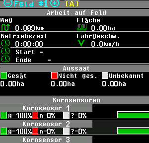
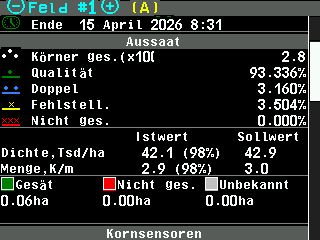
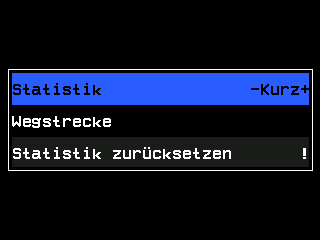
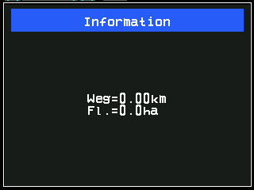

Der Bildschirm Statistik
Der Bericht über die Arbeit auf jedem Feld, Block für Block — und das Menü, das das aktive Feld wählt, die Wegstrecke über die gesamte Lebensdauer zeigt und ein Feld löscht.
Der Bildschirm Statistik ist der Bericht über die Arbeit: wie weit Sie gefahren sind, wie viel Sie bearbeitet haben, was gesät wurde und wie gleichmäßig. Er wird für jedes Feld getrennt geführt und überdauert das Ausschalten. Öffnen Sie ihn mit „HOME“ aus der Saattabelle (vom Startbildschirm aus zweimal); „BACK“ führt zurück zum Startbildschirm, „HOME“ weiter zum nächsten Arbeitsbildschirm.
Der Bericht ist eine lange Liste. „UP“ und „DOWN“ blättern sie um eine Zeile je Berührung; „PLUS“ und „MINUS“ zeigen das nächste oder vorige Feld. Auf dem Bildschirm selbst blättert ein Wischen nach oben oder unten, ein Wischen mit zwei Fingern wechselt das Feld, und ein Tippen mit zwei Fingern öffnet das Menü.
Der Kopf und die Arbeit auf dem Feld

- Feldnummer, zwischen den Zeichen von „MINUS“ und „PLUS“.
- (A) — das ist das aktive Feld, in das das Panel jetzt schreibt.
- Weg — beim Säen gefahrene Strecke, in km.
- Fläche — beim Säen bearbeitete Fläche, in ha.
- Betriebszeit — die mit Säen verbrachte Zeit.
- Fahrgeschw. — die Durchschnittsgeschwindigkeit beim Säen.
- Start / Ende — wann die Arbeit auf diesem Feld begann und endete.
- Aussaat — die gesäte, nicht gesäte und unbekannte Fläche.
- Kornsensoren — danach folgt ein Block je Sensor.
- g, n, ? — der Anteil der gesäten, nicht gesäten und unbekannten Fläche für diesen Sensor.
- Balken — dieselben Anteile in Farbe: Grün gesät, Rot nicht gesät, Grau unbekannt.
- Bildlaufleiste — wo Sie im Bericht stehen.
Unbekannt ist die Fläche, die gefahren wurde, während ein Sensor keine Verbindung hatte oder aus der Überwachung genommen war. Im Modus „Durchfluss“ ist nicht gesät die Fläche, auf der der Sensor keinen Fluss sah; im Modus „Einzelkorn“ ist es die Fläche einer Fehlstelle mal der Zahl der Fehlstellen.
Blöcke, die Sie außerdem sehen können
| Block | Was er enthält |
|---|---|
| Produkte nach Masse | Je Produkt: die ausgebrachte Masse, Ist gegen Soll in kg/ha und in Prozent sowie die Strecke, der Anteil und die Zahl der Abweichungen über „Produktmenge Fehler,%“ hinaus. |
| „Arbeit ohne Alarmüberw.“ | Weg, Fläche und Anteil, Zeit und Geschwindigkeit, gefahren beim Säen ohne überwachte Alarme — ein zu hoch eingestellter Wert, oder absichtlich hoch eingestellt. |
| „Geschw.-Übw.“ | „Weg, lang.“ und „Weg, schn.“: gefahrene Strecke und Anteil außerhalb der Geschwindigkeitsgrenzen. Nur bei eingeschalteter Geschwindigkeitsüberwachung. |
| „Düngung“ | Gedüngte, nicht gedüngte und unbekannte Fläche. |
| Je Kornsensor, in der Vollansicht | Die Strecke, der Anteil und die Zahl, wie oft die Reihe unter der Alarmschwelle lief. |
Im Modus „Einzelkorn“

Der Block „Aussaat“ fügt hinzu: „Körner ges.(x1000)“; „Qualität“ (Einzelablagen), „Doppel“ und „Fehlstell.“ beim Säen sowie „Nicht ges.“ — Fehlstellen über Strecken, auf denen nichts gesät wurde —, jeweils als Anteil an allen Körnern und Fehlstellen; und „Dichte,Tsd/ha“ und „Menge,K/m“, jeweils in den Spalten „Istwert“ und „Sollwert“, mit dem Verhältnis in Prozent. Jeder Kornsensor fügt seine Körner, seine Qualität, Doppelbelegungen und Fehlstellen, seine Aussaatdichte und Menge sowie die Strecken hinzu, die er unter und über der zulässigen Abweichung lief. „Körner ges.(x1000)“ erscheint auch in den anderen Modi, wenn „Körner immer zählen“ eingeschaltet ist.
Die Istmenge zählt nur die Strecke, auf der Saatgut floss; die Aussaatdichte zählt die ganze Strecke. Ihre Abweichungen können deshalb verschieden sein.
Das Menü des Bildschirms
Drücken Sie „MENU“.

| Punkt | Was er bewirkt |
|---|---|
| „Feld wählen“ | Macht das angezeigte Feld zum aktiven — siehe Neues Feld beginnen. Nur bei einem Feld angezeigt, das nicht aktiv ist. |
| „Statistik“ | Ansicht „Kurz“ oder „Voll“. Ohne Geschwindigkeitssensor nicht angezeigt. |
| „Wegstrecke“ | Weg und Fläche über die gesamte Lebensdauer des Systems; sie lassen sich nicht zurücksetzen. Ohne Geschwindigkeitssensor die Laufzeit. |
| „Auf SD-Karte sichern“ | Angezeigt, wenn eine Speicherkarte bereit ist. Die Firmware 2.2.8 speichert den Bericht noch nicht und antwortet mit einer Fehlermeldung. |
| „Statistik zurücksetzen“ | Löscht das angezeigte Feld. Auf der Stufe „Fahrer“ verlangt das Panel den Code einer höheren Stufe; darüber fragt es „Sind Sie sicher?“. |

Ihre Maschine tut etwas, das diese Seite nicht beantwortet? Schreiben Sie an support@agriwelt.com — es antwortet ein Ingenieur.